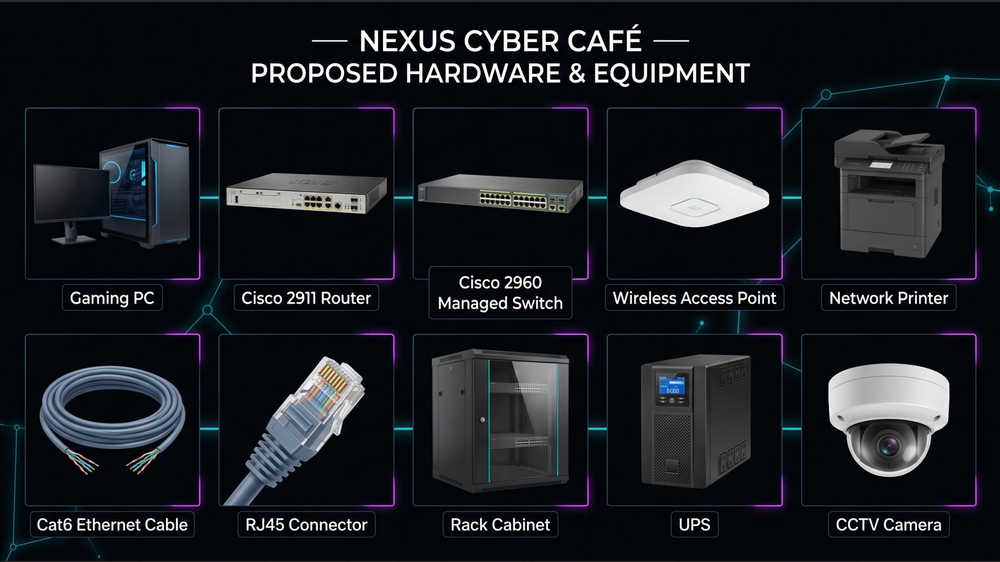
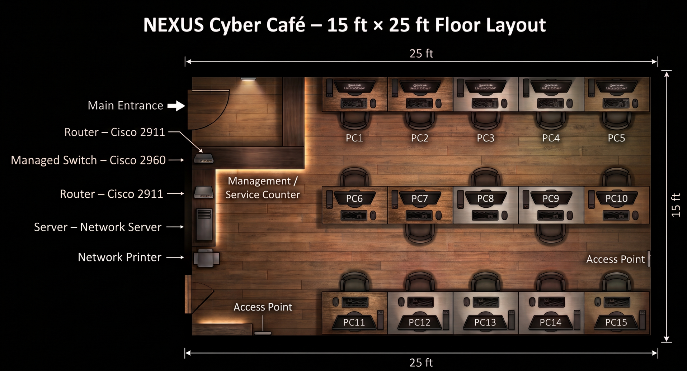
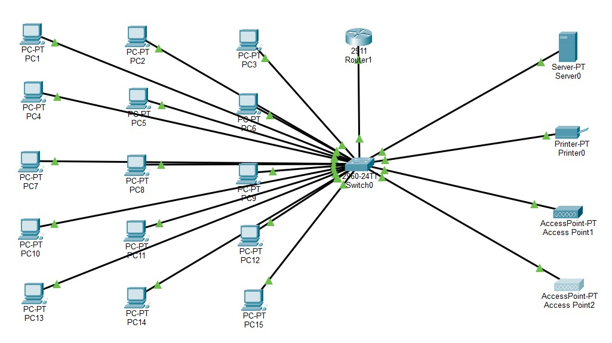

Hardware & Software
This section presents the proposed hardware and software required to support the daily operations and network infrastructure of NEXUS Cyber Café.
2.1 Hardware
| Hardware | Quantity | Function | Estimated Price |
|---|---|---|---|
| Gaming PC | 15 units | Customer computers for gaming, browsing and online learning | RM45,000 |
| Cisco 2911 Router | 1 | Provides network routing and acts as the Internet gateway | RM600 |
| Cisco 2960 Managed Switch | 1 | Connects and manages wired network devices | RM1,200 |
| Wireless Access Point | 2 | Provides wireless network coverage | RM800 |
| Network Printer | 1 | Provides shared printing services | RM700 |
| Cat6 Ethernet Cable | 1 box | Provides wired network connections | RM500 |
| RJ45 Connector | 50 pcs | Cable termination | RM50 |
| Rack Cabinet | 1 | Organizes and protects network equipment | RM800 |
| UPS | 2 | Provides backup power for network equipment | RM800 |
| CCTV Camera | 4 | Provides security monitoring for the premises | RM1,200 |
| Total Estimated Hardware Cost | RM51,650 | ||

2.2 Software
| Software | Function |
|---|---|
| Windows 11 Pro | Operating system |
| Microsoft Office | Productivity software |
| Steam | Gaming platform |
| Antivirus | Security protection |
| Network Management Software | Monitor network performance |
| MySQL Database | Customer and database management |
Network Topology & Design
The network design is proposed based on the shop lot size of 15' × 25'. The design focuses on efficient connectivity, easy maintenance and future expansion.
3.1 Network Layout

3.2 Network Devices
- Router: Connects the cyber café network to the Internet and acts as the default gateway for devices on the network.
- Managed Switch: Connects the gaming computers, server, printer, and wireless access points within the local area network.
- Server: Provides network and database services for managing cyber café information.
- Wireless Access Point: Provides wireless network access for customers and other wireless devices.
- Gaming PCs: Provide computers for customers to access the Internet, play games, study, and perform digital activities.
- Network Printer: Allows customers and staff to access printing services through the network.
3.3 Network Topology
Star Topology
NEXUS Cyber Café uses a Star Topology, where every workstation, server, printer, and wireless access point is connected directly to a central 24-Port Managed Switch using dedicated Ethernet cabling.
- All network devices connect directly to the central managed switch.
- Provides an efficient point-to-point physical connection between each endpoint and the network core.
- Easy to install, manage, and troubleshoot.
- Failure of one workstation or network device does not affect the operation of other connected devices.
- Easy to expand when additional computers or network devices are added.
- Suitable for the NEXUS Cyber Café network environment.

3.4 Communication Media
| Media | Usage | Reason |
|---|---|---|
| Cat6 UTP Ethernet Cable | Connects the gaming PCs, server, printer, wireless access points, and router to the central managed switch. | Provides reliable and high-speed communication between network devices. |
| Wireless Wi-Fi | Provided through two wireless access points for customers to connect smartphones, laptops, tablets, and other wireless devices. | Provides convenient wireless connectivity without requiring physical network cables. |
IP Addressing
IPv4 addressing is used to assign unique addresses to network devices within the NEXUS Cyber Café network.
4.1 IP Addressing Table
| Device | IP Address | Subnet Mask | Default Gateway |
|---|---|---|---|
| Router | 192.168.10.1 | 255.255.255.0 | - |
| Server | 192.168.10.2 | 255.255.255.0 | 192.168.10.1 |
| Printer | 192.168.10.3 | 255.255.255.0 | 192.168.10.1 |
| Access Point 1 | 192.168.10.4 | 255.255.255.0 | 192.168.10.1 |
| Access Point 2 | 192.168.10.5 | 255.255.255.0 | 192.168.10.1 |
| PC1 | 192.168.10.10 | 255.255.255.0 | 192.168.10.1 |
| PC2 | 192.168.10.11 | 255.255.255.0 | 192.168.10.1 |
| PC3 | 192.168.10.12 | 255.255.255.0 | 192.168.10.1 |
| PC4 | 192.168.10.13 | 255.255.255.0 | 192.168.10.1 |
| PC5 | 192.168.10.14 | 255.255.255.0 | 192.168.10.1 |
| PC6 | 192.168.10.15 | 255.255.255.0 | 192.168.10.1 |
| PC7 | 192.168.10.16 | 255.255.255.0 | 192.168.10.1 |
| PC8 | 192.168.10.17 | 255.255.255.0 | 192.168.10.1 |
| PC9 | 192.168.10.18 | 255.255.255.0 | 192.168.10.1 |
| PC10 | 192.168.10.19 | 255.255.255.0 | 192.168.10.1 |
| PC11 | 192.168.10.20 | 255.255.255.0 | 192.168.10.1 |
| PC12 | 192.168.10.21 | 255.255.255.0 | 192.168.10.1 |
| PC13 | 192.168.10.22 | 255.255.255.0 | 192.168.10.1 |
| PC14 | 192.168.10.23 | 255.255.255.0 | 192.168.10.1 |
| PC15 | 192.168.10.24 | 255.255.255.0 | 192.168.10.1 |
Internet Access
This section explains the proposed Internet service and how NEXUS Cyber Café connects its internal network to the Internet.
5.1 Internet Connection
Internet Service Provider (ISP): Provides the Internet connection for NEXUS Cyber Café.
Router: Connects the café's local network to the Internet and distributes the connection through the managed switch and wireless access points.
Default Gateway:
192.168.10.1
Internet Usage: Supports online gaming, web browsing, online learning, printing services, and other digital activities.
Connected Devices: Gaming PCs, server, printer, and wireless access points use the router as their default gateway to communicate with external networks and access the Internet.
Project Video
The project video presents the proposed NEXUS Cyber Café, network topology, configuration, hardware, IP addressing and network testing.
Conclusion
In conclusion, NEXUS Cyber Café is designed to provide a reliable, affordable and comfortable place for students, gamers, employees and the local community.
The proposed network uses suitable hardware, software, communication media, Star Topology and proper IP addressing to ensure stable and efficient network connectivity.
Overall, the proposed network design meets the objectives of the project and supports the daily operations of the cyber café.
In the future, NEXUS Cyber Café can expand its services by adding more computers, upgrading network equipment and providing better Internet speed to support more customers.